History Of Chernobyl
Chernobyl, a city located in northern Ukraine, is famous for the nuclear disaster that occurred at the Chernobyl Nuclear Power Plant on April 26, 1986. The disaster is known as the worst nuclear accident in history, causing severe and long-lasting effects on the environment and human health.
During a routine test of the power plant's fourth reactor, a combination of design flaws and operator error caused the reactor's core to overheat, leading to a steam explosion and a fire that lasted for several days. The fire released radioactive particles into the air, which spread over large areas of Ukraine, Belarus, and Russia.
The initial response to the accident was inadequate, as the Soviet government attempted to downplay the severity of the disaster. It wasn't until several days later that residents of nearby towns were evacuated, and cleanup efforts began. In the years following the disaster, a 30-kilometer exclusion zone was established around the power plant, and the Soviet Union implemented stricter safety measures for nuclear power plants.
The Chernobyl disaster had a significant impact on the environment and human health. The radioactive particles released during the explosion contaminated large areas of land and water, making them uninhabitable. Thousands of people were exposed to high levels of radiation, and many developed long-term health problems such as cancer and thyroid disease.
Today, Chernobyl is mostly uninhabited, except for a few workers who maintain the power plant and tourists who visit the area. The disaster is a reminder of the potential dangers of nuclear power and the importance of safety measures to prevent accidents.
Check Timeline
Timeline Of Chernobyl
1970
March - Pripyat, one of nine "atom cities," is being built and will eventually be home to workers at nuclear power facilities.
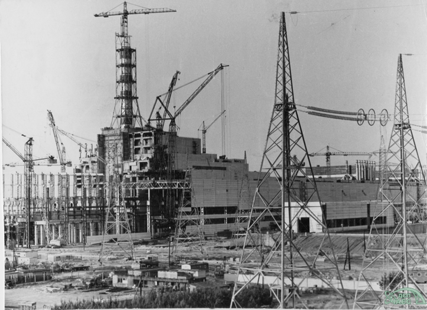Construction of Chernobyl Nuclear Power Plant. (© chnpp.gov.ua)
1972
On what kind of nuclear plant to erect at Chernobyl, discussions are taking place in Kiev. The development of pressurized water reactors is something that Chernobyl's deputy chief engineer, Grigori Medvedev, suggests (PWRs). He explains that a boiling water reactor (RBMK) emits forty times more radiation than a power generating reactor (PWR), Aleksei Makukhin, the energy minister of Ukraine. Alekzandrov, a physicist, disagrees with this and claims that the RBMK-1000 was not only the safest reactor, but it also generated the cheapest power. The RBMK pressure tube reactors were chosen to be built for this purpose.
1976
October – The Chernobyl Power Plant's cooling water reservoir is starting to fill up.
1977
The first of the four reactors of the Chernobyl Nuclear Power Plant is prepared for operation, and the second one starts up in 1978.
The second generating unit is being built with design deviations and assembly and construction breaches, according to KGB data.
1979
Pripyat has been recognized as a city.
April – Chernobyl nuclear power plant produces its first 10 billion kilowatt-hours of electricity.
1982
At reactor No. 1, a partial core meltdown takes place. It wasn't until 1985 that the accident's full scope was realized. Within months, the reactor was fixed and returned to operation.
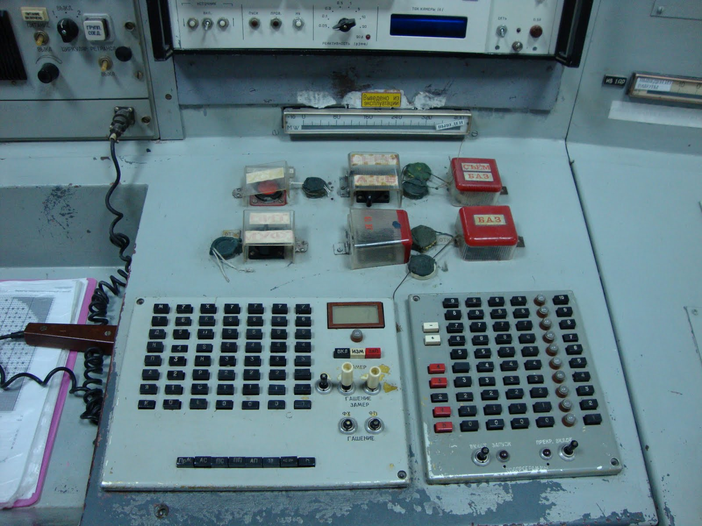The six emergency shutdown switches from control room 1. The EPS-5 button (top row, center) initiates rapid emergency shutdown (© sovietologist).
1983
December – On the twentieth, Chernobyl's Unit 4 facility becomes operational after finishing its construction. The media broke this news on December 22, a day of celebration for those who work in the energy sector. Every division of government employment in the Soviet Union had a designated day when they were honoured publicly for their efforts and awarded additional incentives.
1985
April – Information on any negative consequences brought on by the operation of the energy sector on workers, residents, and the environment was deemed unsuitable for publishing by newspapers, radio, or television, according to Energy Minister Anatoly Mayorets.
1986
February – With relation to Ukraine's nuclear reactors, Vitali Sklyarov, Minister of Electricity and Electrification, is reported as stating in Soviet Life magazine:
“There is a one in 10,000 year chance of a collapse. The plants include three safety mechanisms that keep the controls secure and resistant to failure.”
25 April - Friday
The test begins.
01:00 – The reactor was operating normally and at full power. Both of the turbines of the power generators received steam power. For the test, the operators gradually started to lower the power. The test's objective was to examine the RMBK reactor's dynamics in conditions of constrained power flow.
13:05 – The reactor attained 50% power twelve hours after power reduction began. As a result of the power reduction, only one turbine was now required to process the reduced volume of steam, and turbine #2 was turned off.
14:00 – The Soviet electrical officials refused to permit this since there appeared to be a demand for electricity elsewhere, therefore the reactor stayed at 50% power for an additional 9 hours. Under regular test protocols, the reactor would have been decreased to 30% power.
Emergency core cooling system switched off.
26 April - Saturday
00:00 – Aleksandr Akimov, the unit shift head in charge of the test, replaces Tregub as leader.
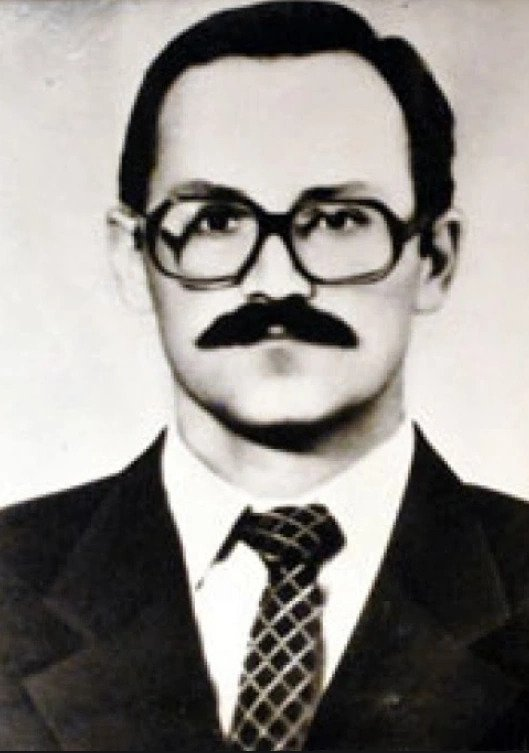00:28 – Power drops in the reactor; more control rods are withdrawn. Control rods are switched from local to global control.
It is alarming to see the reactor power drop from 1500 MWt to 30 MWt; Akimov wants to call off the test, but Dyatlov overrides him and forces him to do so.
The test was overseen by Anatoly Dyatlov, the deputy chief engineer. At the instant reactor power dipped to 30 MW thermal, he ordered the operators finish the test. He overruled Akimov and Toptunov's objections and intimidated them into attempting to increase the reactor's power by threatening to turn the shift over to Tregub (the previous shift operator who had remained on-site). The power stabilized at 200 MWt at around 1:00 am and did not rise further, due to continued xenon poisoning of the core.
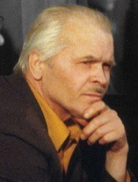01:03 – Right loop is linked to the fourth cooling pump.
01:19 – Steam-drum separators impede shutdown signals.
Due to concerns that a shutdown would terminate the test, the operator prevents automatic shutdown caused by low water levels and the loss of both turbines.
By removing all but six of the control rods, the operator drives the reactor up to 7% power. This was against protocol because the reactor was never intended to run at such low power. When its core is flooded with water, the RBMK reactor becomes unstable. Due to the fact that even tiny temperature variations might result in significant power fluctuations, the operator sought to manually control the flow of water that was coming back from the turbine. The operator attempted to correct the water flow, but was unsuccessful, and the reactor became more unstable.
01:19 – Raised control rods.
01:21 – On the charge face, fuel channel caps could be seen jiggling in their sockets.
The foreman of the reactor sector, Valeriy Ivanovich Perevozchenko, was on the open platform at Level +50 just prior to the explosion. The rupture of the pressure channels was in process when he saw the 350 kilogram blocks above the fuel channels of the Upper Biological Shield hopping up and down. He also felt shock waves travelling through the building's construction. In order to submit his findings, he started running down the spiral staircase to Level +10, via the deaerator gallery, and along the hallway leading to the control room.
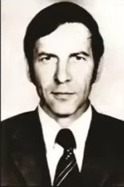01:21:50 – In steam drums, pressure decreases.
01:23:40 – Reinstalling all control rods urgently.
Once the temperature of the water rose too high Cavitation (bubbles) reached the main circulation pumps. When the reactor's coolant began to boil, the power of the reactor gradually rose. Akimov is informed of a power problem by Toptunov. Akimov activates the class-5 emergency button (AZ-5). The synchro indicators showed that instead of inserting to their full depth of 7 meters, the control rods seized at a depth between 2 and 2.5 meters. To allow the control rods to enter the core under their own weight, Akimov disengaged the clutches on the servos, but the rods did not move. Now, rumbling sounds were coming from the reactor. Akimov was bewildered. Pump failure and no water flow were both reported on the reactor control panel.
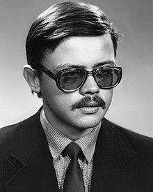01:21:50 – Explosion.
120 times its maximum power is reached by the reactor. The whole radioactive fuel disintegrates, and the pressure from all the extra steam that was intended for the turbines destroyed every pressure tube, causing an explosion.
01:21:50 – The 1000-ton cover that was put over the fuel components is raised by the first explosion. The radioactivity begins to escape. The oxygen in the air that enters the reactor ignites the graphite, starting a fire. The water interacts with the metal of the fuel tubes. Hydrogen, which is created as a result of this chemical reaction, is what causes the second explosion. Flaming trash travels through the air and settles on Chernobyl Unit 3's roof. (The Soviet account on the incident made practically any mention of this hydrogen explosion. Nevertheless, it was discovered via studies funded by the US government that the first version of the tragedy was false and that the second explosion was of immense consequence. This second explosion, according to Richard Wilson of Harvard University in the US, was a little nuclear explosion.)
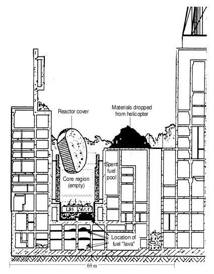Cross section of Reactor Four
After the explosion, only battery-operated emergency lights were left on as the air became dusty and the electricity was cut off.
Valery Khodemchuk, the night shift main circulating pump operator, was discovered in the collapsed portion of the building at the far end of the southern main circulating pumps engine room on level +10. He was most likely murdered instantly. His corpse is buried in the reactor rubble and was never found.
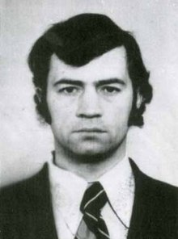The foreman of the reactor area, Perevozchenko, rushed into the control room to report the reactor top's fall. Brazhnik dashed inside after hearing fire in the turbine hall. After observing scattered debris and several flames on Floors 0 and +12, Brazhki, Akimov, Davletbayev, and Palamarchuk sprinted inside the turbine hall.
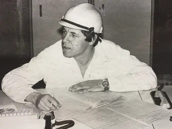01:26:03 – Fire alarm activated.
Akimov summoned the leaders of the electrical and other departments, together with the fire station, to stabilize the facility and control the damage. He asked for emergency power for coolant pumps, hydrogen removal from hydrogen generators, and other actions. No internal phone lines existed, so Akimov sent Palamarchuk to talk with Gorbachenko. Kudryavtsev and Proskuryakov told Akimov and Dyatlov about the reactor's state after they left it. Akimov maintained that the reactor was uninjured but gave the order to Stolyarchuk and Busygin to turn on the emergency feedwater pumps. Davletbayev noted electric sparks, broken wires, and a lack of electricity. Akimov sent Metlenko to the turbine hall to help with the manual opening of the cooling system valves, which was expected to take at least four hours per valve. When Perevozchenko returned, he insisted that the reactor had been destroyed; however, Akimov argued that this was untrue.
Assuming the reactor was undamaged and the explosion was the result of hydrogen building up in the safety control system's emergency tank, Dyatlov ordered reactor cooling at emergency speed. Damage was reported by other staff who proceeded to the control room. Dyatlov, who believed the reactor was still intact despite witnessing the graphite blocks spread on the ground outside the facility, went to the backup control room, pressed the AZ-5 button there, and disconnected power to the control rod servo motors. When Kudryavtsev and Proskuryakov returned to report the damage to the reactor they had witnessed, Dyatlov insisted that what they had actually witnessed was the results of an emergency tank explosion, asserting that the 110m3 tank explosion at Level +71 was sufficient to completely destroy the central hall roof. Dyatlov informed the higher-level managers, Bryukhanov and Fomin, that his presumptions were true. He ran into Genrikh and Kurguz in the hallway and sent them to the medical station. Lelechenko's team had to extract hydrogen from the Generator 8 electrolyzer, so he hurried to the control room of Block 3 and told Bagdasarov to switch down Reactor 3. He then went back to control room 4 and told Akimov to contact the daylight shift and send employees to the stricken unit.
 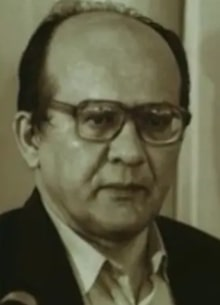
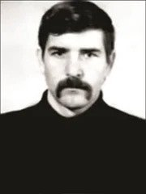
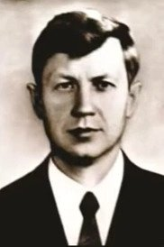
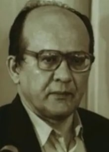
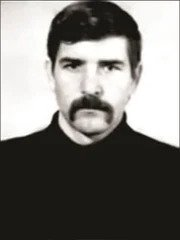
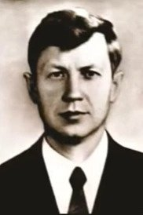
The SIUR trainees from the other shifts, Alexander Kudryavtsev and Viktor Proskuryakov, were there to observe Toptunov and pick up tips. Following the explosion, Dyatlov or Akimov directed them to the central hall to operate the system's handles and manually lower the ostensibly seized control rods. They rushed through the deaerator gallery to the right in search of the VRSO unit elevator, but they discovered it to be broken. As a result, they took the staircase up to Level 36 instead, missing Kurguz and Genrikh who took a different stairway. Level 36 was demolished and covered in debris. They approached the reactor hall after passing through a small passageway leading to the main hall and discovered it obstructed by debris and pieces; hanging fire hoses were pouring water into the reactor core's remnants; and the firemen were no longer present. A blue and crimson fire blazed in the hole where the Upper Biological Shield was wedged into the reactor shaft at an angle. The two just had to stand above the reactor for one minute for a lethal dosage of radiation to colour their bodies with "nuclear tan." They went back to Level 10 and the control room to report the incident, but Dyatlov believed they were mistaken and that the reactor was still in tact since the explosion had been brought on by a hydrogen-oxygen combination in the 110m3 emergency tank.
After the explosions, Valeriy Ivanovich Perevozchenko, the foreman of the reactor area, entered the control room before leaving to locate his coworkers. He observed the nuclear building being demolished via the broken windows of the deaerator gallery. After a fruitless attempt to locate Khodemchuk, Perevozchenko ventured through the radioactive debris on Level 10 to the remnants of Room 306, near to debris releasing over 10,000 roentgens per hour (90 A/kg). Gorbachenko fled with Palamarchuk to save Shashenok. His face was already browned by the radiation when he queried Gorbachenko about radiation levels. He entered the Genrikh and Kurguz control room, which was empty; after passing out and regaining consciousness, he reported the circumstance.
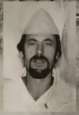“Call everybody, everybody” – Firefighters are told about the incident at Reactors 3 and 4 by Chernobyl Dispatch in 1986.
01:28 (approx) – Fire fighting units under Lieutenant Volodymyr Pravik leave the station.
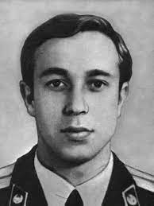Vyacheslav Brazhnik, the senior turbine machinist operator, entered the control room quickly to report the fire in the turbine hall. Razim Davletbayev and Pyotr Palamarchuk, the director of the Chernobyl business group, followed him back to the turbine room. They could see fires on Levels 0 and +12, damaged water and oil pipes, roof debris on top of turbine 7, and scattered pieces of reactor graphite and fuel as well as burning linoleum on the floor. After failing to reach Sashenok in Room 604, Palamarchuk persuaded the two men from the Kharkov mobile laboratory who were charged with documenting the turbine 8 vibrations to leave; unfortunately, by this time, they had both already received a deadly radiation dosage. Afterwards, Palamarchuk dashed through Turbogenerator 8 and reached Level 0. After losing contact with the dosimetry chamber, Akimov gave Palamarchuk the order to look for Gorbachenko before rescuing Sashenok. Palamarchuk and Gorbachenko met at the stairway on Level +27. They uncovered and gathered Shashenok's dead body together.
On Level 12.5, between reactors 3 and 4, Alexander Yuvchenko was at his office. He described the incident as a shock wave that blew in doors, cracked walls, and released a cloud of radioactive dust and steam that was a milky grey colour. The lights went off. A pump operator who had been severely burned, submerged, and shocked asked Khodemchuk to save him; this instantly proved to be impossible because that portion of the structure was vanished. As soon as they noticed the reactor producing a blue glow of ionized air and the structure being destroyed in half, Yuvchenko and the foreman, Yuri Tregub, left the building. Once inside, they discovered Valeri Perevozchenko along with Kudryavtsev and Proskuryakov, two apprentice technicians who had been tasked by Dyatlov or Akimov to manually lower the purportedly jammed control rods. Tregub went to the control room to let them know how extensive the damage was. When the other three entered to locate the control rod mechanism, Yuvchenko held open the big entrance to the reactor chamber. The four ascended a stairway to Level 35 to assess the damage despite Yuvchenko's assurance that there were no control rods remaining. They returned with skin that had developed a "nuclear tan" as a result of the significant radiation dosage they had all received after less than a minute of scanning the reactor wreckage. These were the hospital in Moscow's first deaths among its patients. Yuvchenko sustained severe beta burns as well as gamma burns to his left shoulder, hip, and calf while keeping the radioactive dust-covered door open. His dose was later calculated to be 4.1 Sv. Around three in the morning, he began violently vomiting up; by six, he was unable to stand. He then endured many skin grafts and spent a year receiving blood and plasma infusions in a hospital in Moscow.
01:35 (approx) – Firefighters battle blazes on the turbine hall's roof. Pripyat firemen and Kibenok's guard arrive.
One of the fire engines' driver, Grigorii Khmel, later provided the following account of what transpired: "At around 2:00 in the morning, we reached there. We noticed graphite lying everywhere. Is that graphite, Misha questioned? I threw it away with a kick. Nevertheless, one of the combatants on the other truck took it. It's hot, he declared. The graphite bits varied in size, some being large and others being little, making them easy to pick up. We didn't have a lot of radiation knowledge. Even the staff members were unaware. The trucks were completely empty of water. We directed the water at the top of a cistern after Misha filled it. The youths that perished, including Volodya Pravik and Kolya, then climbed onto the roof. They climbed the ladder. I never ran into them again."
But firefighter Anatoli Zakharov, who has worked in Chernobyl since 1980, offers a different account: I distinctly recall saying to the others in jest, "There must be a tremendous quantity of radiation here. If we all still exist in the morning, we'll consider ourselves lucky."
He said that the firemen from Fire Station No. 2 were aware of the dangers twenty years after the catastrophe: "Of course we were aware! We never would have approached the reactor if we had adhered to the rules. Nonetheless, it was our responsibility and a moral commitment. Like kamikaze, we were."
01:56 – Units combating fires are under the direction of Major Telyatnikov.
02:00 – Instructing Akimov, the unit shift leader, to pour water into the reactor, Dyatlov, the deputy chief engineer, stepped outside with radiation monitoring technician Gorbachenko to have a look at the facility. He still thought the reactor was intact despite the fuel and graphite being dispersed all over the place. They then went back to the command centre. He became ill around 5:00 and went to the hospital with Gorbachenko. Sitnikov took his seat at his job in lieu of Fomin.
02:15 – A crisis conference is called by the Ministry of Home Affairs' Pripyat division. The decision is made to set up a road block to stop vehicles from entering or leaving the town. Assistance from the police is needed. Along with the fire fighters, thousands of police officers show up without any dosimeters, protective gear, or awareness of radiation.
02:30 – The plant manager, Brukhanov, arrives in the bunker under the administrative building.
The reactor is unharmed, flames are being put out, and a second emergency water pump is being prepared to cool the reactor, according to Akimov, who also says that there was a significant radiation disaster. They vastly underestimate the radiation level due to the limitations of the sensors that are now available.
03:00 – Providing Akimov's account of the events, Bryukhanov phoned Maryin, the deputy secretary for the nuclear power sector. Maryin passed the news on to Frolyshev, who then phoned Vladimir Dolgikh, who then called Gorbachev and other Politburo members. Moscow ordered the reactor to be fed water at 4:00.
03:30 – When Telyatnikov inquired about what was happening to his firefighters, Akimov responded by sending a dosimetrist.
04:00 – More firefighting personnel are sent in from Kiev, Poleskoe, and Chernobyl.
04:30 – Fomin, the chief engineer, entered the control room in Block 4.
The emergency water feed tank was damaged, although Akimov confirmed that the reactor was unharmed. Water was already being continuously fed into the reactor by emergency pump 2 from the deaerators when Fomin gave the command (a machine that is frequently used to filter oxygen and other dissolved gases out of the water used to feed steam boilers). Fomin persisted in pressuring the workers to add water to the reactor and moved additional people to Unit 4 to take the place of those who were becoming radiation-damaged. As Dyatlov left, Fomin gave his successor Sitnikov instructions to ascend to Unit C's roof and inspect the reactor. Sitnikov followed the instructions but was fatally exposed to radiation there; at 10:00 he returned and informed Fomin and Bryukhanov that the reactor had been destroyed. The management disregarded him and insisted that water be supplied into the reactor. Water, however, continued to flow down the damaged pipes and into the plant's lower levels, bringing radioactive material and producing short circuits in the electric cableways that connected all four of the blocks.
05:00 – General Berdov, the militia's top leader, comes from Kiev.
06:00 – Although Akimov and Toptunov stayed at the plant, Akimov was replaced at 06:00 by the unit head Vladimir Alekseyevich Babychev because he was already feeling ill. They believed that a blocked valve was keeping water from getting to the reactor, so they went to the partially destroyed feedwater chamber on Level +24. They turned the valves on the two feedwater lines with Nekhayev, Orlov, and Uskov. They then ascended to Level +27 and, almost knee-deep in the fuel-and-water combination, opened two valves on the 300 line; however, due to their developing radiation illness, they were unable to open the valves on the sides. After hours of valve tinkering by Akimov and Toptunov in Room 712, the conduit was partially buried by the radioactive water. Smagin spent 20 minutes in the chamber after opening the third valves, during which time he was exposed to 280 rads.
06:35 – By this point, 186 fire fighters from 37 fire brigades had been dispatched. With the exception of the fire contained within Reactor 4, all flames have been put out.
08:00 – At each of the four units, a new shift begins. The fifth and sixth reactors' construction is still being done by 286 personnel.
20:00 – The formation of a government committee is overseen by Valery Legasov. As they arrive, they are shocked to discover pieces of graphite scattered throughout. Nobody thinks there may be a graphite fire.
Several Pripyat residents congregate on a railroad bridge outside the city after the explosion, which offers a view of the nuclear power station. They talked about gorgeous flames (the burning graphite) that were all the colours of the rainbow and that rose higher than the smoke pillars. Unfortunately, they were unaware that the wind that passed over them included a dose of radiation equal to 500 Roentgen (an exposure level of 750 Roentgen/h, or 7.5 Sv(Sieverts), is considered deadly). Nobody who was on the bridge that night survived; as a result, it is now frequently referred to as the "bridge of death."
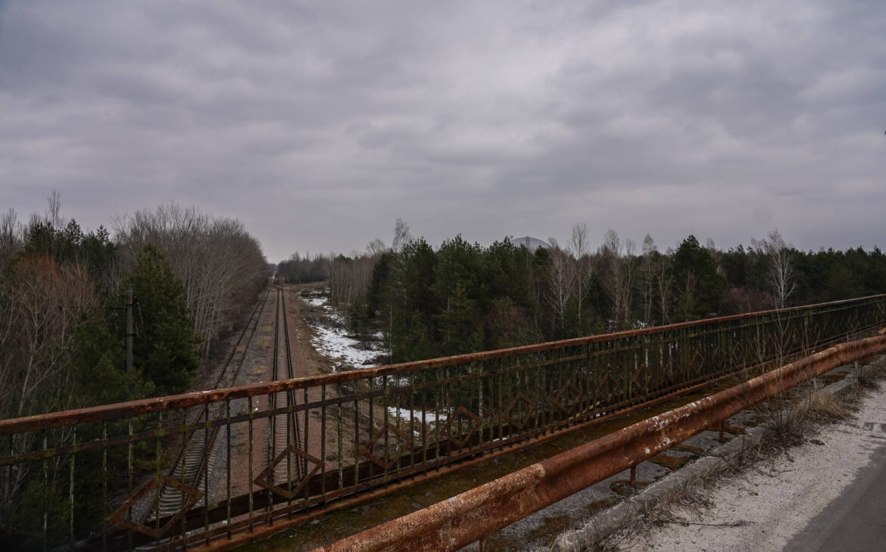Alexei Makukhin, the Soviet Union's deputy energy minister, detailed an explosion in the reactor's top section and the collapse of some of the building's walls and the roof in a covert letter to the Soviet Communist Party sent shortly after the accident. He said that there was no need to evacuate the adjacent town of Pripyat and that workers were taking steps to cool the reactor's "active zone."
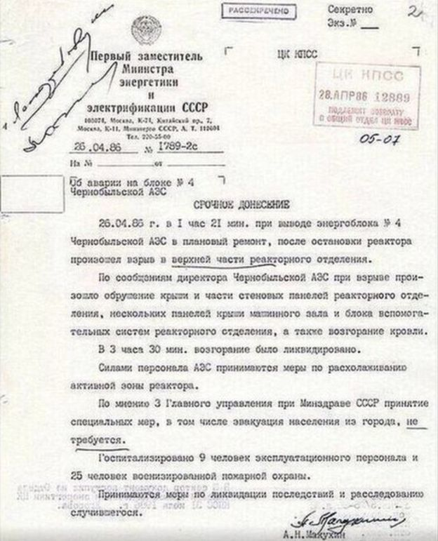The Soviet Communist Party received a letter from deputy energy minister Alexei Makukhin outlining details of the Chernobyl Power Station 4 disaster.
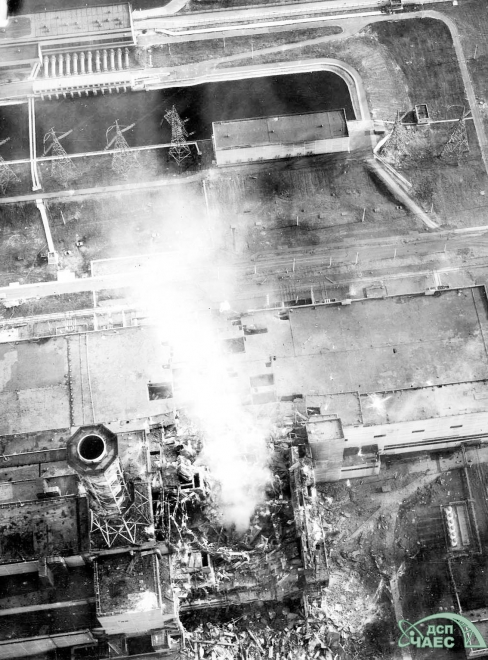Within hours of the catastrophe, Alexei Makukhin, the Soviet Union's deputy energy minister, detailed an explosion in the reactor's top section and the collapse of some of the building's walls and roof in a covert message to the Soviet Communist Party. There was no need for the adjacent town of Pripyat to be evacuated, he added, adding that staff were taking steps to cool the reactor's "active zone."
27 April – Sunday
Buses begin to arrive in Pripyat. They wait for the command to evacuate the city, spending the entire night in a state of alert.
01:30 – Twenty-four hours after the disaster at Block 4 began, at 01.13 and 02.13 hours, respectively, Units 1 and 2's operations are stopped.
07:00 – On a vehicle equipped with radiation equipment, General Pikalov departs. Ramming through the locked gates, he pauses at the plant to check the radiation levels. He proves that the reactor's graphite is burning and emitting a massive quantity of heat and radiation.
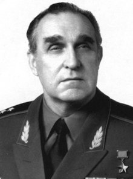10:00 (approx) – Sand, boron, and lead are initially dropped by helicopters.
Between the 27th of April and the 1st of May, about 1800 helicopter flights dropped almost 5,000 metric tons of sand, lead, clay, and neutron-absorbing boron onto the blazing reactor. It is now known that hardly no neutron absorbers made it to the core.
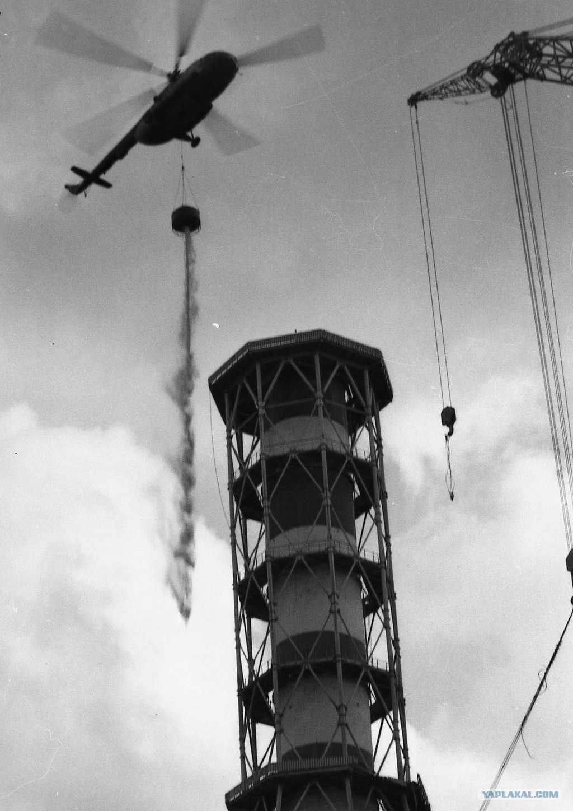Sand, lead, clay, and neutron-absorbing boron were all dropped from helicopters. (yaplakal.com)
12:00 – Radiation levels fall marginally. There was momentarily hope that no evacuation would be required. Nevertheless, the intensity of radiation rises again and reaches its maximum.
14:00 – Evacuation of Pripyat begins.
Residents have two hours to get their possessions. Pripyat's 43,000 people were evacuated in 3.5 hours utilizing 1,200 buses from Kiev. Residents recall that everyone was rushing, but no one panicked. Residents of Pripyat were instructed to bring only what they needed for two or three days, like as food, a change of underwear, and their identity documents. Dosimeters are seized.
Those who attempted to return afterwards, having realized that Pripyat had been lost forever, to retrieve personal goods were met by alarm wired buildings and armed troops.
An excerpt of the evacuation announcement:
“...Attention. Attention. Attention. Attention. Dear Comrades! The City Council of people’s deputies informs that due to the accident at Chornobyl nuclear power plant in the city of Pripyat, adverse radioactive conditions are forming. By the Party and Soviet bodies by military units, necessary measures are being taken. However, in order to provide complete safety for the people especially for children it is necessary to temporarily evacuate city residents to evacuation points in Kyiv oblast. In order to do this, to each apartment house today, April 27 1986, starting at 2:00 p.m. Buses will be provided and escorted by police officers and representatives of the Party’s City executive committee. It is recommended to take with you: IDs, basic necessities, and foodstuff for the first time. By the executives of enterprises and institutions, a list of workers is provided that stay to ensure the normal functioning of the city. All apartment houses during the evacuation will be guarded by police officers. Comrades, while temporarily leaving your houses please, do not forget to close windows, turn off all electrical and gas equipment and to close water taps. Please remain calm, be organized, and maintain order during the temporary evacuation. “
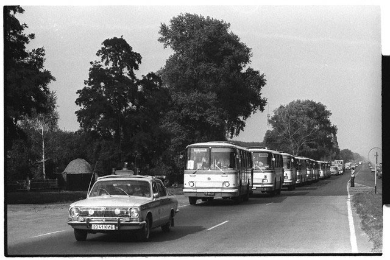Pripyat's residents are evacuated. (Igor Kostin)
28 April – Monday
09:30 – Workers at the Forsmark Nuclear Power Plant in Sweden notice a worrisome increase in radiation. Originally discovered when a regular examination indicates that the soles of shoes worn by a radiological safety engineer at the plant were radioactive.
21:02 – An accident has happened at the Chernobyl Nuclear Power Plant, according to Moscow television news.
"Steps are being made to reduce the accident's effects. Those who are impacted are receiving aid. There is a government commission in place.
All state-run radio broadcasts were then replaced with classical music, which was a frequent tactic of preparing the people for the news of a catastrophe that had occurred. Scientist teams were armed and placed on alert while waiting for instructions.
23:00 – An MCA (maximum credible accident) has happened at the Chernobyl nuclear plant, according to a Danish nuclear research facility. They mention a full meltdown of one of the reactors and the discharge of all radiation.
29 April – Tuesday
According to the sixth item on Vremya, the major evening news show, two individuals died in the disaster, a piece of the reactor building was damaged, and inhabitants of Pripyat and three surrounding villages were evacuated.
The first genuine information in the Western world arrived on Tuesday morning, when a powerful American spy satellite sent photographs of Chernobyl to Washington specialists. They were astounded to see the roof of the reactor torn off and the blazing mass still smouldering.
Before being published in media, the initial Soviet images of the Chernobyl disaster were filtered by removing the smoke.
Polish officials intend to give iodine pills to newborns and youngsters in the country's north-east to prevent them against thyroid cancer.
30 April – Wednesday
According to TASS (Russian News Service), the administration has denied western allegations of large deaths. The statement reiterates the earlier claim that only two people died in the accident, that 197 people were hospitalized, and that radiation levels are decreasing.
May 2
Two storeys of bubbler pools beneath the reactor functioned as a big water storage for the emergency cooling pumps. Because of damaged cooling water lines and accumulated firefighting water, the pools and basement were inundated following the catastrophe.
At a temperature of more than 1200 °C, the smouldering graphite, fuel, and other material above began to burn through the reactor floor and mingled with molten concrete from the reactor liner, resulting in corium, a radioactive semi-liquid substance similar to lava. It was thought that if this combination melted through the floor into the pool of water, it would cause a severe steam explosion, ejecting much more radioactive material from the reactor. As a result, the pool had to be drained.
Alexei Ananenko (who knew where the valves were), Valeri Bezpalov, and Boris Baranov, whose role it was to carry a submersible light, all volunteered. Their light failed almost quickly, forcing them to search for the valves in the dark, frequently underwater. The sluice gates were opened, and the water was drained. They all returned to the surface, and their colleagues, according to Ananenko, leaped for excitement when they learned they had opened the valves.
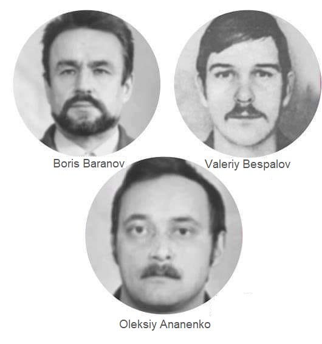The three men completed the task despite wading through toxic water, and Ukrainian President Petro Poroshenko honoured them in 2018 with the Order for Courage. At the event in April 2018, Poroshenko remarked that the three soldiers had been rapidly forgotten at the time and that the Soviet press agency was still withholding a lot of information about the disaster. They had stated that all three had passed away and had been buried in "tightly sealed zinc coffins" at the time. While Ananenko, Bespalov, and Baranov, who passed away in 2005 after a heart attack, all received their prizes in person, Baranov's was given to him posthumously.
After wading through toxic water, all three completed the operation and were awarded the Order of Courage by Ukrainian President Petro Poroshenko in 2018. Poroshenko stated during the April 2018 event that the three guys were soon forgotten at the time, with the Soviet press agency still concealing many facts of the disaster. They said at the time that all three had perished and were buried in "tightly sealed zinc coffins." Ananenko and Bespalov were given their honours in person, however Baranov, who died of a heart attack in 2005, was given his posthumously.
A melting was less likely to result in a huge steam explosion without the bubbler pool. The molten core must now ascend to the water table beneath the reactor to accomplish this. It was intended to freeze the earth beneath the reactor, which would aid in stabilizing the foundations and reduce the likelihood of this occurring. Using oil drilling machinery, liquid nitrogen injection started on May 4. It was calculated that to maintain the earth frozen at 100 degrees Celsius, 25 metric tons of liquid nitrogen would be needed every day. The cooling system's intended location was rapidly filled with concrete when this proposal was swiftly abandoned.
Miners and Metro construction personnel begin digging a tunnel beneath Unit 3 to build a heat exchanger beneath the No. 4 reactor.
A 30-kilometer evacuation zone is set up around the plant (90,000 people).
May 5
To prevent the Pripyat River from becoming poisoned, an embankment is being built.
May 6
Radionuclide emissions fall from 8 million to 150,000. Fluid nitrogen is injected from Unit 1 through pipelines to freeze the soil beneath the reactor and avoid a steam explosion. Pravda publishes the first comprehensive report on the situation. Schools in Gomel and Kiev have been shuttered, and all students have been relocated. 500,000 people have been forced to flee their homes. 140,000 of them are barred from returning home. After eleven days, Kiev radio finally cautions its listeners not to eat green vegetables and to remain indoors as much as possible.
May 7
Pumps from the fire department empty the basement under the core of water. Once 20,000 metric tons of extremely radioactive water were drained away, the operation was finished on May 8. Each firefighter receives 1000 rubles as a prize (approximately 2000 US dollars). Pravda publishes the first comprehensive report on the situation.
May 8
The disaster is "without precedent," said Academician Yevgeny Velikhov, vice-president of the Soviet Academy of Sciences and the lead scientist sent to Chernobyl, to Izvestiya (News Group).
May 9
Lieutenant Volodymyr Pravik, Hero
Lieutenant Volodymyr Pravik, one of the first firefighters on the site, dies a few days before his 24th birthday at Moscow's Hospital No.6 of severe radiation illness. His remains was interred in Moscow's Mitinskoe cemetery in a sealed zinc casket. He was awarded the Order of Lenin and the Soviet Union's Hero awards posthumously.
According to the IAEA, Russia began encapsulating the reactor, including putting concrete under the reactor to prevent it from reaching groundwater.
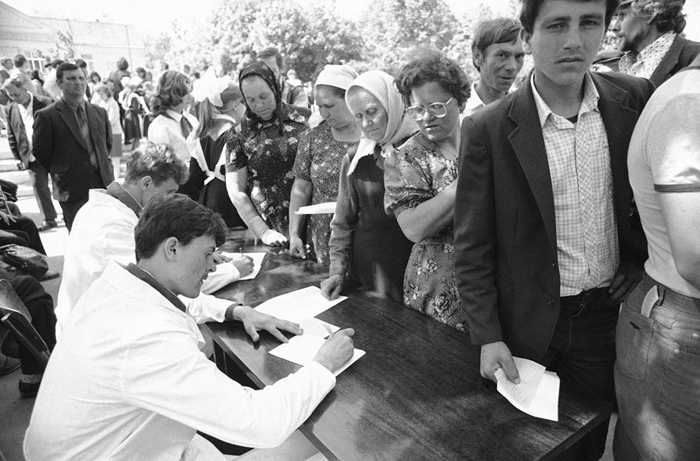People of Kiev queue up on May 9, 1986, to fill out papers prior to radiation testing for everyone who may have been exposed to radioactive fallout.
May 10
Aleksandr Akimov dies from radioactive burns that cover his whole body. At the time of the explosion, a senior reactor operator was at the controls in the control room; he got a lethal dosage while attempting to resume the feed water flow into the reactor; he was posthumously given the Order "For Courage" of the third degree.
According to the IAEA, the fire has been doused, but the temperature in the reactor remains high. Meanwhile, a Ukrainian government official claims that the reactor is still on fire and that firefighters are constantly attempting to extinguish it.
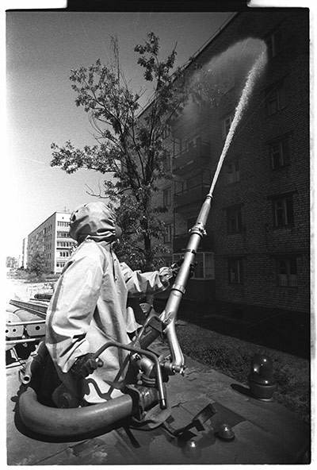Liquidators use a substance called "bourda," which means molasses, to clean the radioactive dust off the streets. May 1986. (Courtesy Of Igor Kostin)
May 22
The Russian First Deputy Health Minister refutes the belief that drinking vodka (or red wine) will help you recover from radiation exposure.
May 23
A Soviet government agency is responsible for ordering the delivery of iodine preparations. Currently, it has no medical value. Residents of impacted regions will already have radioactive iodine buildup in their thyroid glands because it only remains active for 10 days.
May 27
A month after the disaster the risk is not yet over. A concrete building will be created, and the sarcophagus concept will be born.
June 15
According to Pravda, practically the whole management team of the reactor has been fired for "irresponsibility and lack of control." A year later, the Chernobyl Director Victor Bryukanov and his assistant (senior engineer), Nikolai Fomin, would be tried.
July 3
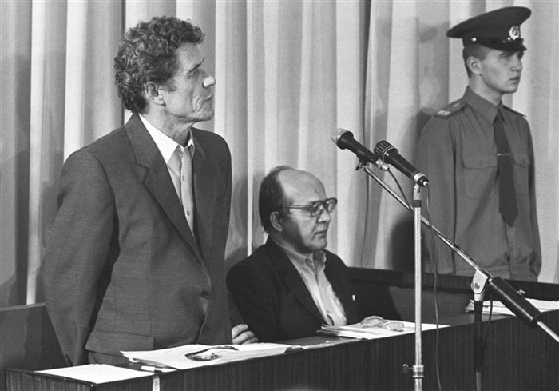The Politburo has sentenced Viktor Petrovich Bryukanov, the Chernobyl plant's director at the time of the tragedy, to ten years in jail for "major mistakes and weaknesses in the work that led to the accident with devastating repercussions." Bryukhanov was also purged from the communist party.
Bryukhanov suffered from radiation illness after being exposed to high amounts of radiation, and he was freed in 1991 after serving five years of his sentence. Bryukhanov continues to insist that there was no problem with the reactors and that the fourth reactor was the only one that malfunctioned. Many people saw him as a scapegoat.
In 1986 and 1987, the World Health Organization reported that 240,000 rehabilitation personnel were needed. Between 1986 and 1992, 600,000 persons received special certificates certifying them as liquidators. Several liquidators were acclaimed as heroes by the Soviet government and the press, while others battled to get their role legally acknowledged for years.
After the incident, the remaining three reactors were turned off. Nonetheless, even as the reactors were shut down, they needed to be maintained and monitored.
August 20
The International Atomic Energy Agency received a complete report on the cause of the accident (in Russian). According to the report, the catastrophe was caused by an exceptional chain of negligence, mismanagement, and breaches of safety standards.
September 18
Galsjo Forest elk hunters load a quarry in Northern Sweden with radioactive corpses.
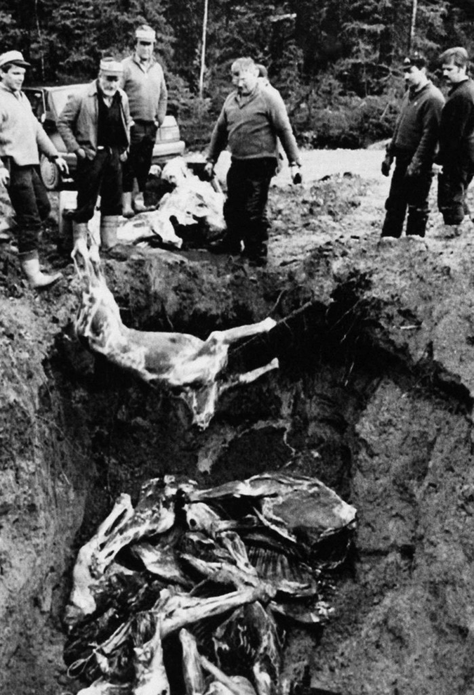Galsjo Forest in Northern Sweden
September 20
The Soviet Union paid approximately $3 billion, mostly for relocation, compensation, and power loss.
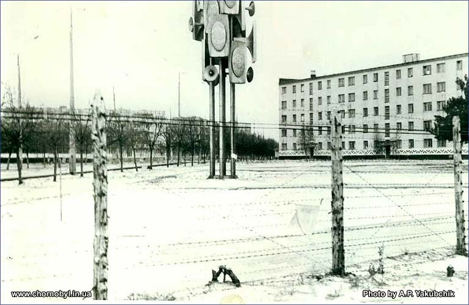Barbed wire fence around Pripyat, 1986. (© chornobyl.in.ua)
September 29
On October 1, Reactor 1 will restart and be linked to the grid.
October 10
Work on reactors 5 and 6 has been restarted.

October 1st - Construction on the sarcophagus over reactor 4 begins. Construction of reactors 5 and 6, in the backdrop, is set to resume. (ZUFAROV/AFP/Getty Images)
November 9
Reactor 2 restarts.
November – Hans Blix (middle), the head of the International Atomic Energy Agency, watches a video depicting the clean-up efforts with members of a government panel. Blix became a prominent character of the accident clean-up, visiting the Chernobyl site multiple times and directing the development of the sarcophagus.
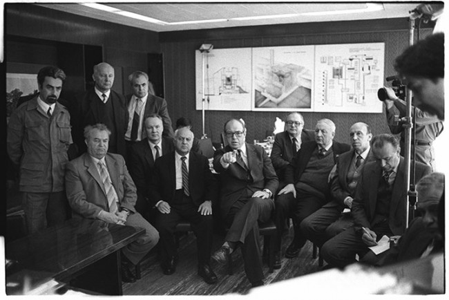The International Atomic Energy Agency's director, Hans Blix, travels to Chernobyl.
December 14
The fourth reactor is now covered with a concrete roof, or "sarcophagus". For at least 30 years, it is intended to shield the environment from radiation. 6,000 tons of metal structures and 300,000 tons of concrete were used.
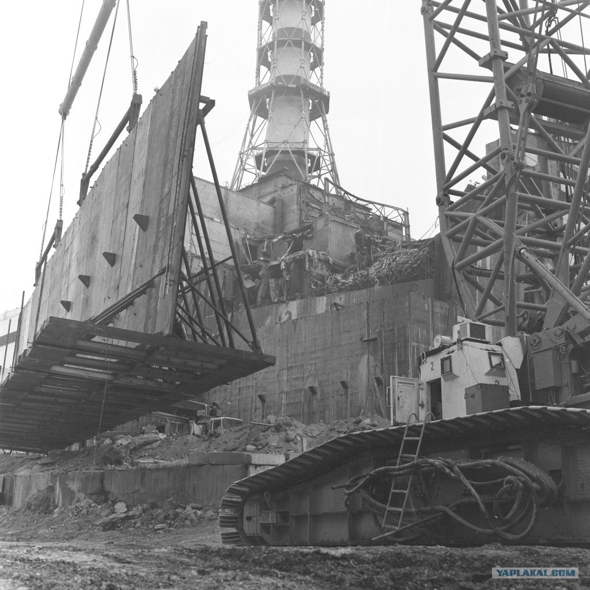Construction of the “sarcophagus” (yaplakal.com)
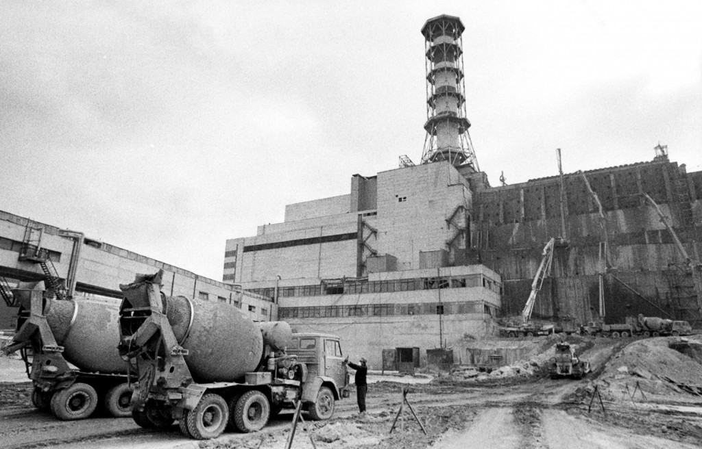At the location of the concrete sarcophagus above reactor 4, trucks filled with concrete are waiting to be unloaded.
"We made an assessment of the situation and discovered that the reactor core components were dispersed across a considerable region. Moreover, include atmospheric movement. We consequently came to the conclusion that it would be prudent to conceal any potential sources of additional radioactive discharges. A shelter had to be constructed. What sort of shelter to use was a different issue. Nonetheless, it had to be covered."
"Once a sarcophagus was constructed, it was determined that people could approach it and that radiation readings on its surface shouldn't be more than one roentgen per hour. I hate to say that was not possible. But, the walls did display something close by. The roof was where we fell short."
"In terms of engineering, the effort was at the limit of what was feasible. You needed a great deal of bravery and intuition."
"When things started to shift, helicopters were able to fly at lower altitudes for greater observation. They were dropped into specially designed bathyscaphe tanks that we constructed. Every day we learned something new, every day we made some changes, and as a consequence, we could complete the task quickly."
Said by Evgeny Akimov, a nuclear engineer from the Chernobyl – RT.com
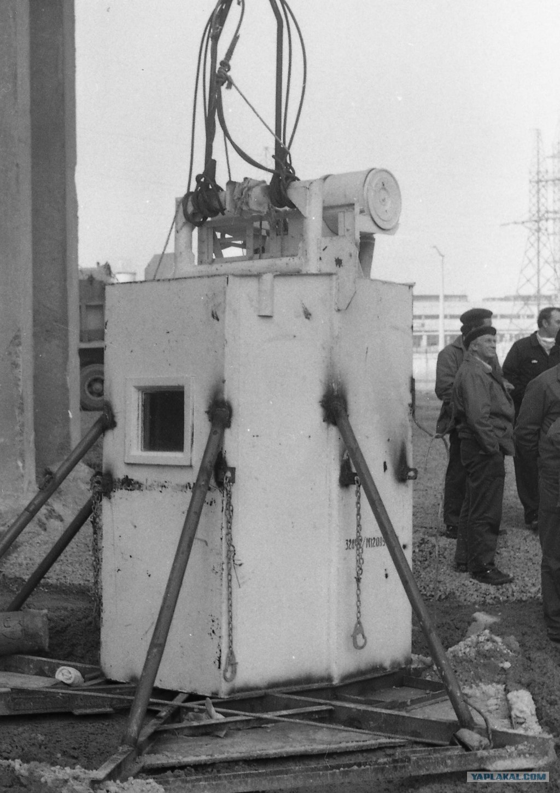A specialized bathyscaphe tank where persons were dropped below. (yaplakal.com)
December 22
Soviet experts claim that the sarcophagus presently encircling the reactor was only intended to last 20 to 30 years.
1987
March – Russian filmmaker Vladimir Shevchenko, who captured much of the initial response to the accident on video (Chornobyl: Chronicle of Difficult Weeks), passes away from radiation poisoning.
April 21
Reactor 3 restarts supplying electricity.
April 24
Construction work on blocks 5 and 6 ceased. On May 23, 1989, the decision is made not to construct the reactors.
September 16
According to a top Moscow official, the Chernobyl accident cost the Soviet Union 200 billion UK pounds.
1988
Norway raises the caesium limit in reindeer meat for human consumption to 6000 Bq/kg. This is an extremely high number. Sweden similarly boosts their quota to 1500Bq/kg from 300Bq/kg in May 1987. The majority of countries set a limit of 600 Bq/kg. Even this statistic has been widely criticized. Yet because to this constraint much of the reindeer meat may be marketed in Nordic nations.
1991
October 11
The turbine hall of Reactor 2 catches fire. When it was being repaired, Turbine 4 caught fire. A malfunctioning switch caused a surge of power to rush to the turbine, scorching part of the insulation covering the wire. As a result, hydrogen, which was employed as a turbine coolant, leaked into the turbine hall, where it ignited the ceiling and caused one of the trusses holding the roof to fall.
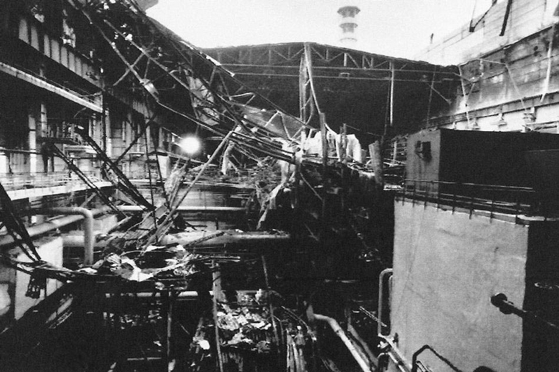1992
The Ukrainian government holds an international competition for concepts to replace the hastily built sarcophagus above reactor 4, but only one offers a sliding arch option. A later research reveals that by employing this strategy, construction workers are far less likely to get a hazardous dosage of radiation.
2000
December 15
The final operational reactor, Reactor 3, has been turned off.
2007
September 17 - The New Safe Confinement (shelter over reactor 4) project contract has finally been signed, with the French consortium Novarka building the 150 by 257 meter arched structure. Building expenses are projected to be 432 million euros over a five-year period.
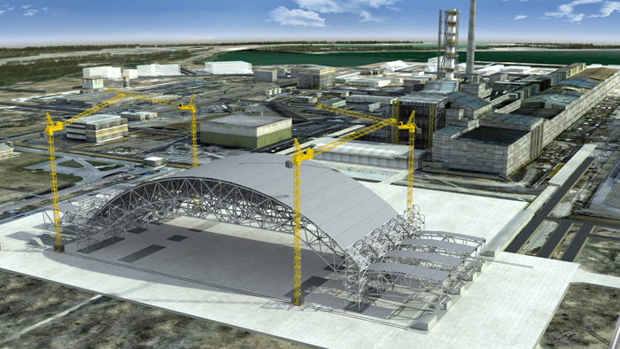A computer-generated rendering of the New Safe Confinement under development. (Courtesy Of NOVARKA)
2011
February - Ukraine's Emergencies Ministry has begun formally approving tourist visits. Every year, around 10,000 people visit Chernobyl and its surrounds. According to Forbes magazine, the dead zone is one of the world's most unique tourist spots.
June 20 - The zone is closed to tourists as trips are suspended.
The prosecutor general's office performs inspections and determines that the Emergencies Ministry violated the law by running tours and generating an unsuitable profit. With each visitor to the zone paying roughly US $100 for admission, the Ministry earns millions of dollars each year. “We compel the ministry to report to the government each dollar made from these outings. We are aware that a lot of money has been made, but we are unsure of who received it. Why not allocate the funds and utilize them to address the zone's issues?”, Ukraine's Prosecutor General's Office spokesman, Alexander Ampleev. In order to continue trips to the hazardous zone, the Emergencies Ministry launches a lawsuit.
November 25
A Kiev court has formally prohibited excursions to Chernobyl and its environs. According to officials, the Emergencies Ministry does not have the authority to authorize excursions to Chernobyl without the consent of the Interior Ministry.
2013
January 19 - Tourists may now visit Pripyat again. The matter has been settled, but the admission fee has been hiked by $130.
February 13 - During severe snowfall, a portion of the power plant's roof falls. The "sarcophagus," which is 50 meters away, remains unharmed.
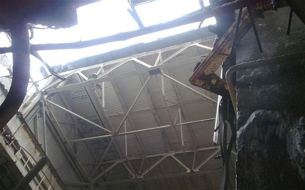A section of power plant roof collapses.
2015
July 24
The two sides of the New Secure Confinement are joined. The arch was erected in two portions due to its massive size. The parts are held together by 1,000 bolts.
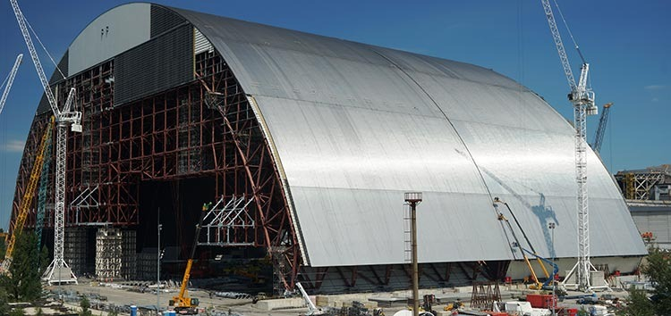The New Safe Confinement's two sections are united.
2017
July 24
The New Safe Confinement Shelter above Reactor 4 is scheduled to be finished.
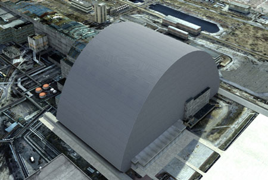A replica of the finished New Safe Confinement above reactor 4 is shown. (Courtesy Of NOVARKA)
2019
HBO's miniseries "Chernobyl" becomes a critically acclaimed and widely watched portrayal of the disaster and its aftermath. The series brings renewed attention to the tragedy and raises questions about the role of government secrecy and accountability in the handling of nuclear accidents.
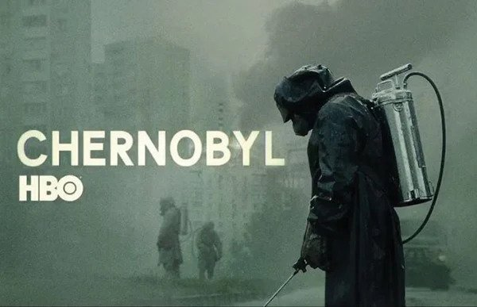Check out the Digital Archive for more information on the Chernobyl disaster.
Digital Archive More InfoDigital Archive
The archive section on the webpage is a valuable resource for users to access additional information about the Chernobyl disaster. This section contains a collection of images, videos, and interview recordings of individuals who experienced the event firsthand. These primary sources from before, during, and after the disaster provide a broad and thorough understanding of the historical context and aftermath of the event. Users can access government reports and news articles of the disaster in various formats, making it an inclusive and comprehensive resource.
- Images
- Videos
- Interviews
- Government Reports
- News Articles


{kind=link}
{kind=link}
{kind=link}
{kind=link}
{kind=link}
{kind=link}
{kind=link}
{kind=link}
{kind=link}
{kind=link}
{kind=link}
{kind=link}
{kind=link}
{kind=link}
{kind=link}
{kind=link}
{kind=link}
{kind=link}
{kind=link}
{kind=link}
{kind=link}
{kind=link}
{kind=link}
{kind=link}
{kind=link}
{kind=link}
{kind=link}
{kind=link}
{kind=link}
{kind=link}
{kind=link}
{kind=link}
{kind=link}
{kind=link}
{kind=link}
{kind=link}
{kind=link}
{kind=link}
{kind=link}
{kind=link}
{kind=link}
{kind=link}
{kind=link}
{kind=link}
{kind=link}
{kind=link}
{kind=link}
{kind=link}
{kind=link}
Acknowledgments
The photographers and videographers who have captured images and footage of the Chernobyl disaster are a remarkable group of individuals. Through their work, they have documented one of the most significant nuclear disasters in history, and have provided a glimpse into the devastation and tragedy that resulted.
Their work has not only served as a record of the disaster, but also as a testament to the bravery of those who risked their lives to contain the disaster. They have captured the impact of the disaster on the environment and the people who were affected, and their images have served as a reminder of the dangers of nuclear power.
One of the most prominent photographers of Chernobyl is Igor Kostin, who captured the iconic images of the damaged reactor and the immediate aftermath of the explosion. His images were among the first to be published worldwide, and they helped raise awareness about the disaster.
Anatoly Rasskazov, Victoria Ivleva, and Valery Zufarov are other photographers who have documented the disaster, providing a unique perspective on the impact of the disaster on the surrounding region and the people who lived there.
Volodymyr Repik, Artur Korneyev, and Efrem Lukatsky are other photographers who have captured stunning and haunting images of the disaster. Their images have served as a reminder of the long-lasting effects of the disaster on the environment and the people who were affected.
Vladimir Shevchenko, a videographer, also played an important role in documenting the disaster. His footage of the reactor and the surrounding area provided valuable insights into the extent of the damage and the scope of the disaster.
The work of these photographers and videographers has not gone unnoticed. Their dedication to capturing the tragedy and aftermath of the Chernobyl disaster has helped raise awareness about the dangers of nuclear power and the importance of nuclear safety. Their images and footage will continue to be an essential part of our history, and a reminder of the impact of human error on our environment.
View Sources Document